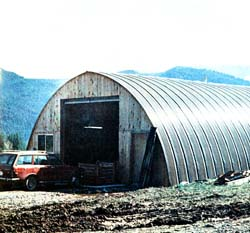

Alternative energy ""breakthroughs"" are not always made in expensive labs on big government contracts. Sometimes they're made in places like Noxon, Montana in something like this old Quonset hut . . . the home of Bill Delps company, Independent Power Developers.